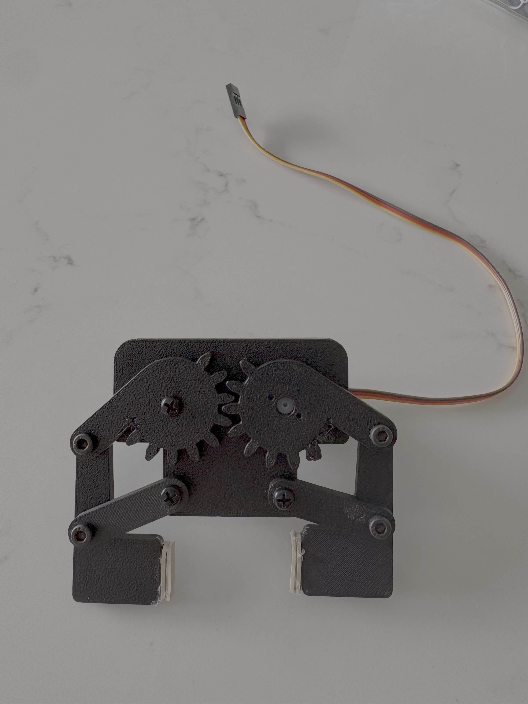
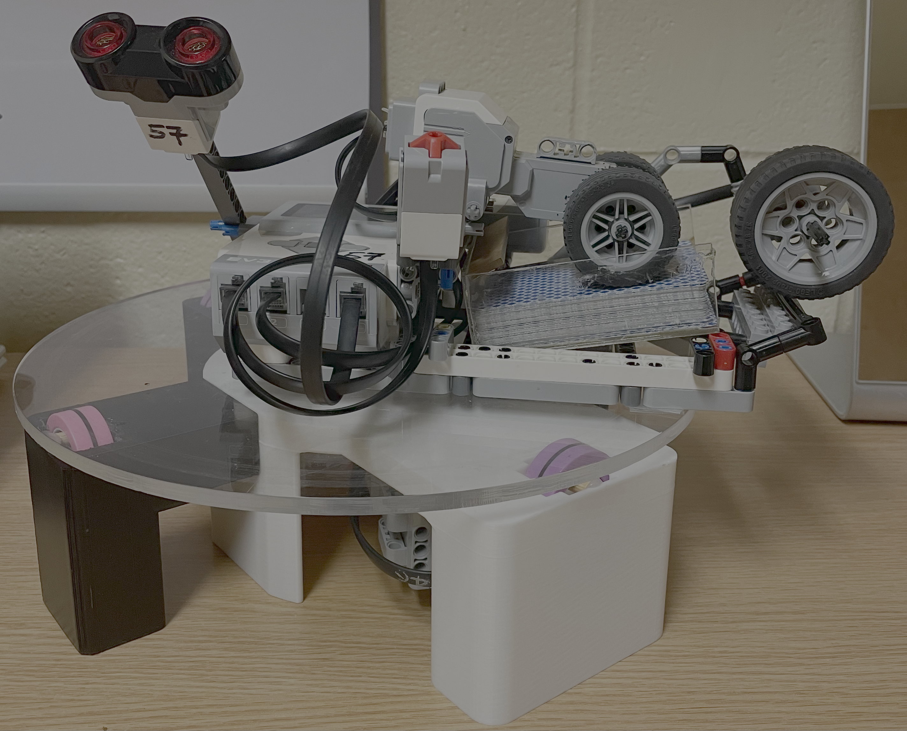
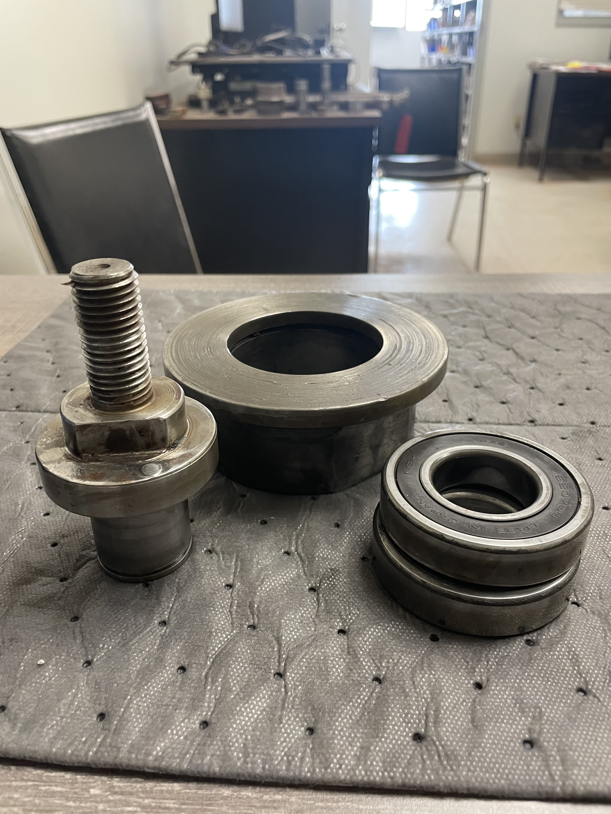
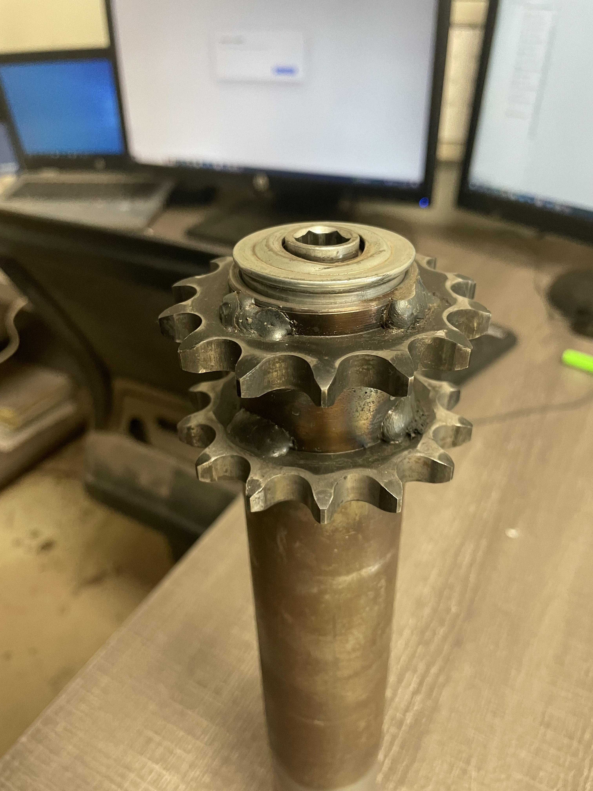
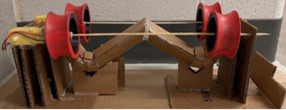
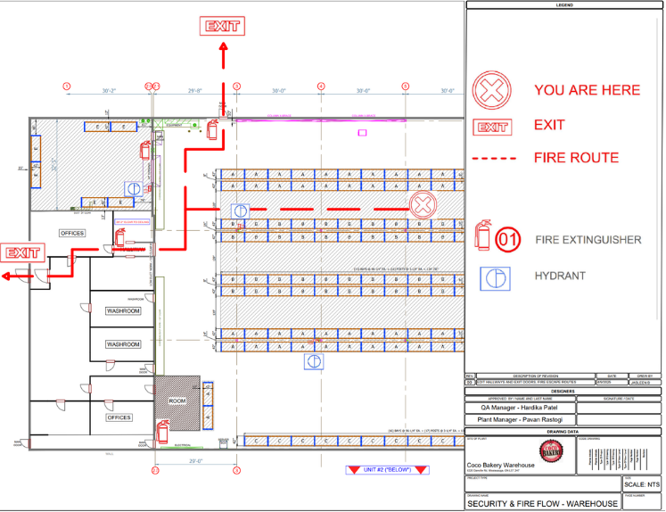

MECHANICAL DESIGN
Pick-and-Place Mechanism
Designed a compact pick-and-place mechanism to lift and move a 20 mm aluminum cube. Developed the linkage geometry, selected and checked gear sizes for interference, and integrated a servo-actuated gripper in SolidWorks. Tested the assembled mechanism to verify its operation.
SolidWorks · Mechanical Design · Prototyping
ROBOTICS · PROTOTYPING

Card Dealing Robot
Designed and assembled a card-dealing robot using custom CAD components and 3D-printed parts. Integrated motors and sensors with RobotC programming to develop a mechanism for distributing playing cards depending on the number of cards and the game type.
SolidWorks · 3D Printing · RobotC
INDUSTRIAL MECHANICAL COMPONENTS



Industrial Component Reverse Engineering & CAD
Reverse-engineered industrial components using physical measurements, AutoCAD drawings, and SolidWorks modeling. Applied calculations to support component fit, fabrication, and reliable operation.
View Project →MECHANICAL DESIGN · TEAM PROJECT

Reflex Shooter Game
Collaborated on the design and prototyping of a ball-shooting game using a flywheel launching mechanism. Contributed to the CAD design and integration of 3D-printed components, motors, and a supporting frame.
SolidWorks · Prototyping · Team Design
FACILITY PLANNING · SAFETY

Warehouse Fire Escape Plans
Updated AutoCAD facility layouts and prepared fire evacuation plans for nine locations. Verified dimensions of all rooms, marked emergency exits, safety equipment, and primary and secondary evacuation routes to make emergency procedures clearer.
AutoCAD · Facility Layouts · Safety Planning